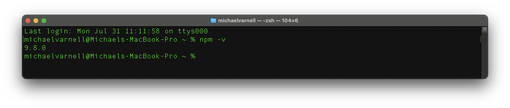
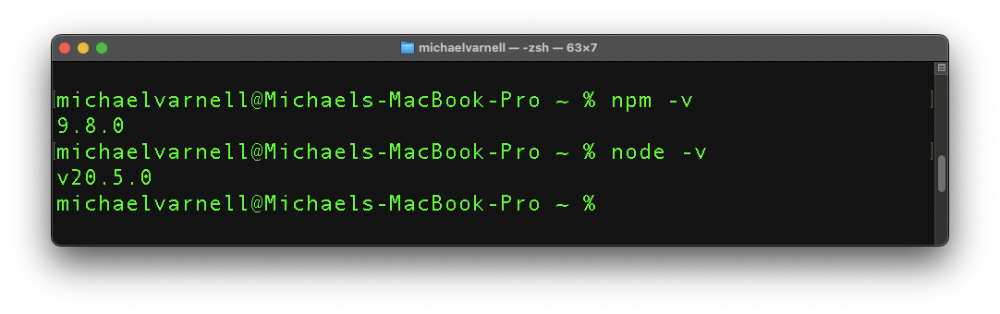
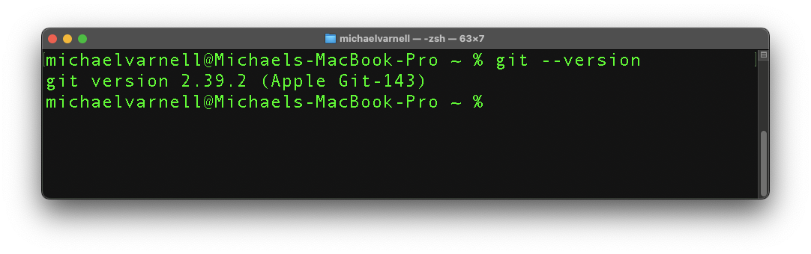

Mac Setup 
This page will walk you through the steps to get your Mac ready for coding.
The first thing we are going to do is check to see what all is installed on our computer. I will list the commands you will need and show what it looks like.

Checking to see if Homebrew is Installed
Open your terminal and type the following command:
brew -v
If it is installed then you will see something like this:

If homebrew is not installed you will need to install it. The command to use in your terminal to install it will be the first one on the page. But if you want more information on how to do the next steps use the video below.
Checking to see if NPM is Installed
npm -v
If it is installed then you will see something like this:
If NPM is not installed you will need to install it. Click Here to go to the Node.js Install Website
After installing the appropriate version for your operating system you will be able to go back and check to make sure that node and npm are installed. They should both install with the one install.
Now you can check in the terminal again to make sure both npm and node have been installed.
node -v
npm -v
If you see something like the following then you are good to go!
Now on to: 
Checking to see if Git is Installed
git --version
If you see something like the following then you are good to go!
If not you will need to install git.
A quick note, Git is different than GitHub. Github is a website, while Git is a separate program that runs on your computer. They work together for version control, much like a document history in Microsoft Word, or Google Sheets. They are a backup, a way to share, and a way to collaborate. We will teach you the basics of using them for back in the bootcamp.
Now we will install Git using the following command.
xcode-select --install
Next check to make sure git was installed using the command below in the terminal:
git --version
If you see something like the following then you are good to go!
Now that we have made those installs you should be ready to go!
If you had issues along the way reach out to one of the mentors and they can walk you through troubleshooting. When you try to use GitHub for the first time, do it in VS Code that way you will have an easier time with setup. ***If the terminal ever asks you for a password, you will not see it being typed in. This is a security feature. Just type in the password and press enter.